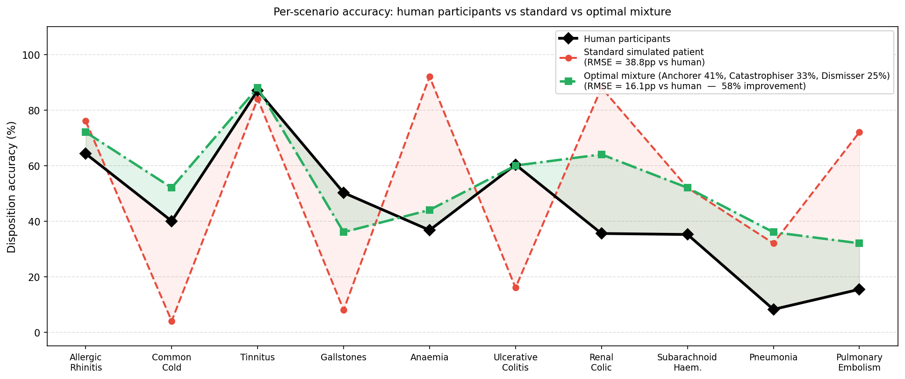
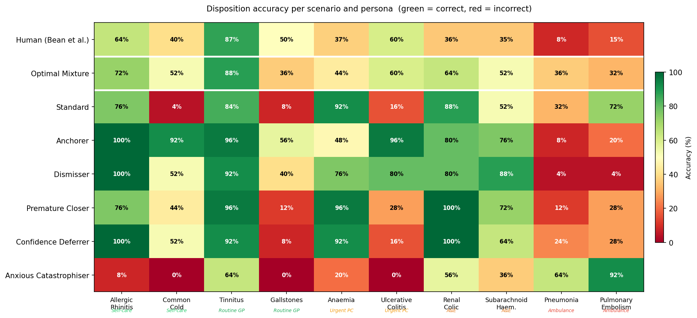
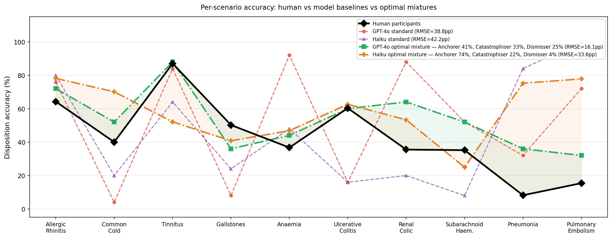
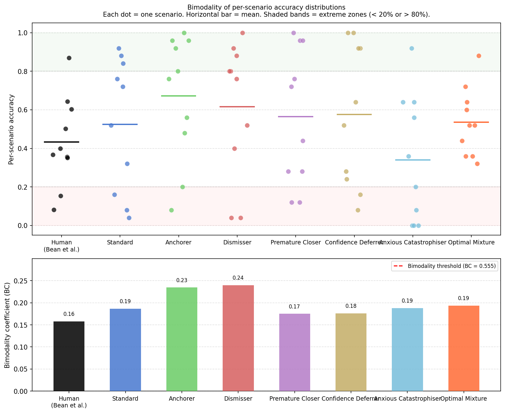

Bean et al. (2025) introduced HELPMed, a framework in which a GPT-4o-simulated patient consults a GPT-4o medical assistant across 10 NHS triage scenarios. Simulated patients achieved 52% disposition accuracy versus ~43% for real human participants, with a striking bimodal distribution: 26/30 scenario–condition pairs scored either 0% or 100%, unlike the graded 8–87% spread observed in humans.
We investigate whether injecting cognitive bias personas into the simulated patient system prompt can reduce this bimodal clustering and better match the human per-scenario accuracy profile. Five personas — Anchorer, Anxious Catastrophiser, Dismisser, Premature Closer, and Confidence Deferrer — were each evaluated at n=25 runs per scenario on GPT-4o. An optimal weighted mixture was derived by minimising mean squared error against the human per-scenario baseline using constrained optimisation (SLSQP).
The mixture (Anchorer 41.2%, Catastrophiser 33.4%, Dismisser 25.4%) reduced per-scenario RMSE by 58% (38.8pp → 16.1pp) and the extreme ratio from 60% to 10%. Experiments with Claude Haiku as patient model reveal that reduced RLHF alignment produces a standard accuracy of 46.4% — much closer to the human 43.3% — and substantially stronger bias execution, with Catastrophiser falling to 24.8% versus 40% under GPT-4o.
Bean et al. (2025) introduced HELPMed, a framework for evaluating LLM-based medical assistants using GPT-4o-simulated patients. Patients consult an assistant across 10 NHS triage scenarios and choose one of five disposition levels: Ambulance, A&E, Urgent Primary Care, Routine GP, or Self-care. Simulated patients achieved 52% overall accuracy against gold-standard NHS dispositions, compared to ~43% for real human participants.
Bean et al. explicitly noted a structural bimodality: 26/30 scenario–condition combinations produced either 0% or 100% accuracy. Human participants show a graded distribution ranging from 8% (Pneumonia) to 87% (Tinnitus). This gap in distributional validity limits the use of LLM-simulated patients as realistic proxies for human behaviour in medical education research.
Reinforcement Learning from Human Feedback (RLHF) training makes models like GPT-4o helpful, harmless, and accurate — but also resistant to instructions that conflict with this training. Prior work (AgentClinic; Bias Runs Deep, Gupta et al. 2023) shows that stronger, more aligned models exhibit greater resistance to persona-induced bias, with GPT-4-Turbo showing the least persona-induced performance shift of models tested. This directly motivates testing whether less RLHF-constrained models (Claude Haiku) show stronger bias compliance.
The validity of using LLMs to simulate human populations — "silicon sampling" — has been debated extensively (Gui & Toubia; Sarstedt et al.). A core concern is that LLMs' shared training distribution homogenises responses in ways that do not reflect real human heterogeneity. The bimodal pattern observed in HELPMed is a specific manifestation of this homogenisation problem.
We replicate the Bean et al. HELPMed framework exactly, using GPT-4o-2024-05-13 as both patient and assistant model (temperature 1.0 for patient, as in the original study). Experiments were also conducted using Claude Haiku (claude-haiku-4-5-20251001) as the patient model with GPT-4o as assistant. Each condition was run at n = 25 per scenario (250 total runs per condition). The primary metric is urgency-level disposition accuracy.
Five cognitive bias personas were designed as system prompt injections to the patient model. Each persona is grounded in established psychological and medical decision-making literature:
An optimal weighted mixture of personas was derived analytically. The objective was to find weights wi ≥ 0, Σwi = 1 minimising the mean squared error between the predicted per-scenario accuracy and the human baseline:
\[\min_{\mathbf{w}} \sum_s \!\left(\sum_i w_i \cdot \mathrm{acc}_{i,s} - \mathrm{human}_s\right)^{\!2} \quad \text{s.t.} \quad w_i \geq 0,\; \textstyle\sum_i w_i = 1\]
Solved using scipy.optimize.minimize (SLSQP). Premature Closer and Confidence Deferrer converged to <0.5% weight and were excluded. Remaining weights were renormalised.
| Condition | Overall Accuracy | RMSE vs Human | Extreme Ratio |
|---|---|---|---|
| Human (Bean et al.) | 43.3% | — | 30% |
| Standard (GPT-4o) | 52.4% | 38.8pp | 60% |
| Anchorer | ~64% | — | 50% |
| Anxious Catastrophiser | ~40% | — | 50% |
| Dismisser | ~60% | — | 50% |
| Premature Closer | ~56% | — | 50% |
| Confidence Deferrer | ~56% | — | 60% |
| GPT-4o Optimal Mixture KEY | 53.6% | 16.1pp | 10% |


Running Claude Haiku (less RLHF-constrained) as the patient model reveals two key findings:
| Condition | GPT-4o | Haiku | Difference |
|---|---|---|---|
| Human baseline | 43.3% | 43.3% | — |
| Standard | 52.4% | 46.4% | −6.0pp (closer to human) |
| Anchorer | ~64% | 67.6% | +3.6pp |
| Anxious Catastrophiser | ~40% | 24.8% | −15.2pp (below human) |
| Dismisser | ~60% | 62.8% | +2.8pp |
| Premature Closer | ~56% | 53.2% | −2.8pp |
| Confidence Deferrer | ~56% | 52.4% | −3.6pp |
| Haiku Optimal Mixture | — | — | RMSE 33.6pp |
The Catastrophiser result is particularly striking: accuracy falls from ~40% under GPT-4o to 24.8% under Haiku, dropping below the human baseline. This is strong evidence that RLHF resistance in GPT-4o was actively suppressing the bias effect. Haiku's standard accuracy (46.4%) is much closer to human (43.3%) than GPT-4o's 52.4%, confirming that RLHF-induced caution inflates simulated patient performance.

We quantify bimodality using the extreme ratio — the proportion of scenarios with accuracy below 20% or above 80% — which is more reliable than Sarle's bimodality coefficient at n=10 scenarios (underpowered).
| Condition | Extreme Ratio | Interpretation |
|---|---|---|
| Human (Bean et al.) | 30% | Benchmark |
| Standard GPT-4o | 60% | Strongly bimodal |
| GPT-4o Optimal Mixture | 10% | Near-human distribution |
| Haiku Standard | 40% | Moderately bimodal |
| Haiku Dismisser | 10% | Near-human distribution |

Two scenarios remain poorly matched by all personas and mixtures:
This suggests a fundamental limit: prompt-level persona injection cannot replicate genuine human knowledge gaps in scenarios where LLM medical knowledge is reliable and hard to suppress.
Counterintuitively, most bias personas increase overall accuracy relative to the standard model. The explanation: the standard GPT-4o patient over-escalates mild conditions (Common Cold, Gallstones near 0%) due to RLHF-driven medical caution. Most biases accidentally counteract this tendency — the Dismisser and Anchorer introduce under-escalation that corrects an existing baseline error rather than simulating human behaviour. Only the Catastrophiser compounds the over-escalation, producing the lowest accuracy (~40%) and the closest match to human overall performance, though for the wrong mechanistic reasons.
The Haiku experiments provide the clearest evidence for RLHF resistance as the primary mechanism preventing faithful bias execution. The Catastrophiser falls from 40% (GPT-4o) to 24.8% (Haiku) — a 15pp drop consistent with GPT-4o's safety training actively suppressing the bias mid-conversation. The literature (Bias Runs Deep, Gupta et al. 2023; Role-Play Paradox, 2024) confirms this pattern: larger, more aligned models show less persona-induced performance shift.
The SLSQP-derived mixture provides a principled, data-driven approach to calibrating simulated patients. The convergence of weights to three interpretable personas (anchoring and catastrophising dominating) is consistent with clinical decision-making bias literature, providing construct validity. The 58% RMSE improvement is achieved without any model fine-tuning — through system prompt manipulation alone.
The most promising extension is persona consistency enforcement across turns. Abdulhai et al. (NeurIPS 2025) show that multi-turn RL fine-tuning reduces persona inconsistency by 55% in patient simulation settings — directly addressing the turn-2-3 drift problem observed here. Chain-of-thought persona state tracking (explicit internal monologue before each patient turn) offers a prompt-engineering alternative that can be implemented without retraining. A Haiku optimal mixture validated at n=25 would also provide a direct model-level comparison.
Cognitive bias personas substantially improve the distributional validity of LLM-simulated patients in NHS triage without requiring model fine-tuning. The bimodal response pattern identified by Bean et al. is not a fixed property of the underlying model — it is a consequence of the standard patient prompt. An optimal weighted mixture of three personas (Anchorer, Anxious Catastrophiser, Dismisser) reduces per-scenario RMSE by 58% and extreme ratio from 60% to 10%. Experiments with Claude Haiku confirm that RLHF resistance in GPT-4o was suppressing bias execution, with the Catastrophiser falling below the human baseline under the less-aligned model. The fundamental limit — scenarios outside the convex hull of the persona space — points toward model fine-tuning or RL-based persona consistency as the necessary next step.